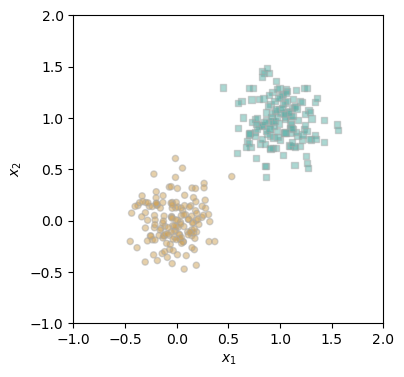
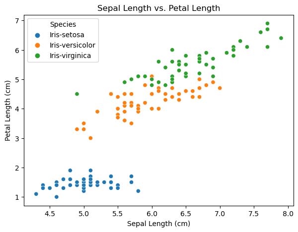
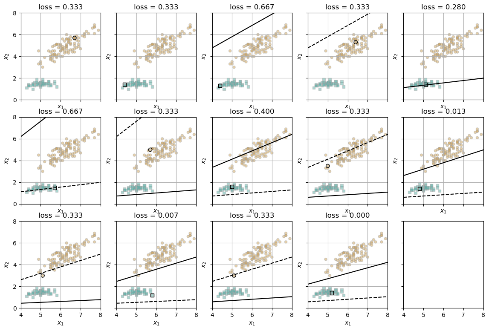
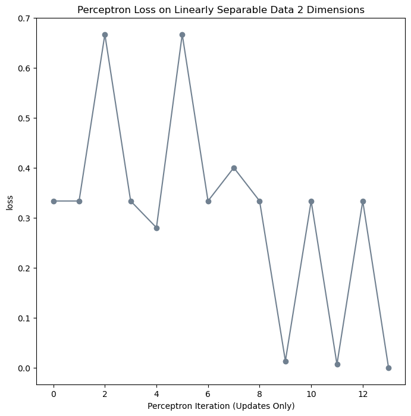
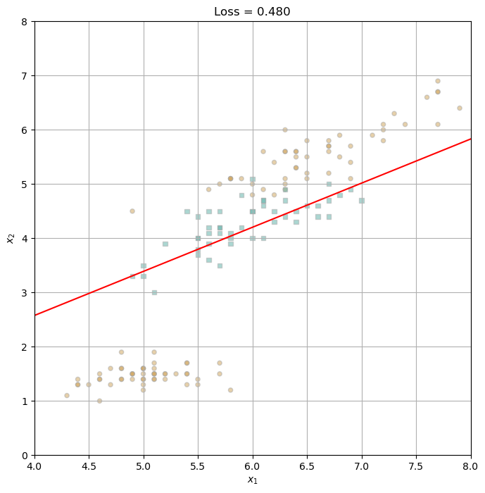
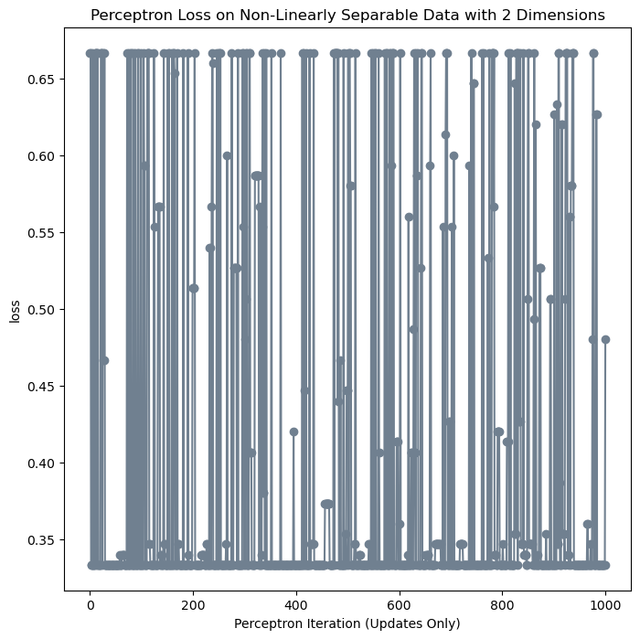
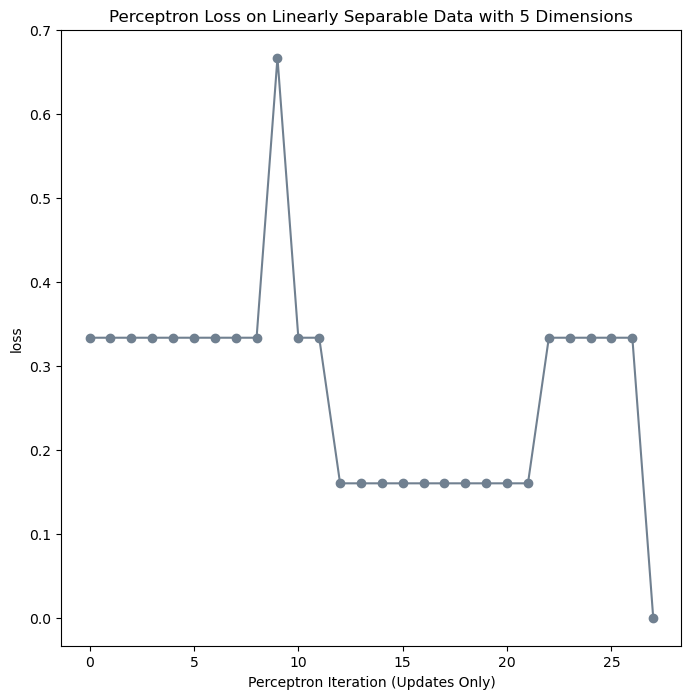
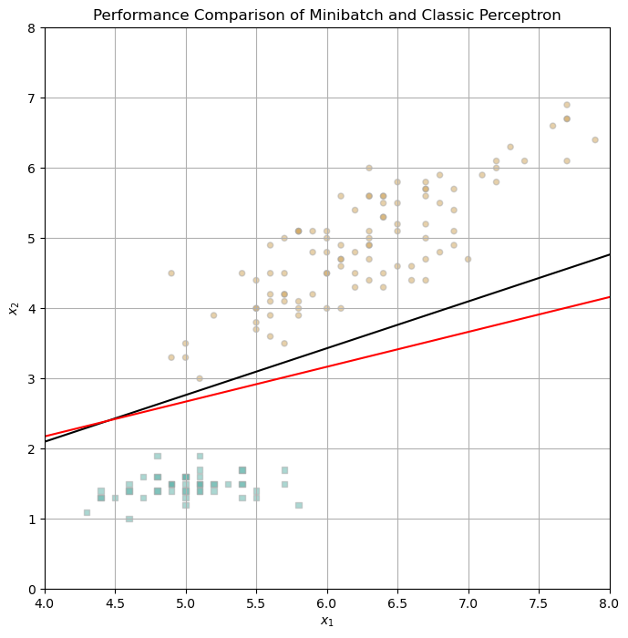
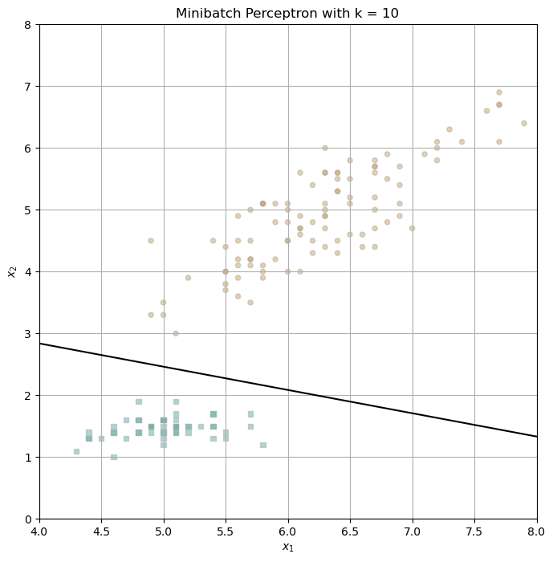
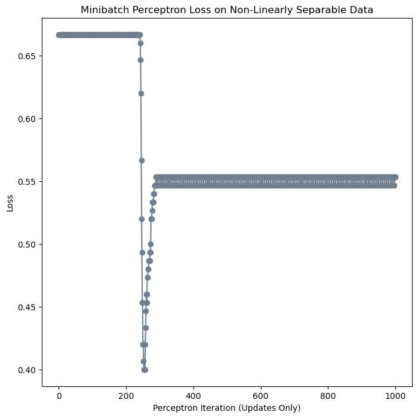

%load_ext autoreload
%autoreload 2
from perceptron import Perceptron, PerceptronOptimizerThe autoreload extension is already loaded. To reload it, use:
%reload_ext autoreloadOscar Fleet
April 9, 2024
In this blog post, I am aiming to construct an implementation of the perceptron algorithm and then test its efficacy on a synthetic set of linearly separable data. I will then use the popular Iris dataset that can be found on Kaggle as a prime example of a linearly separable and non-linearly separable dataset. The Iris dataset is composed of three labels, one of which is linearly separable from the rest of the data, and two which are not. I will use this characteristic to use the dataset as both a linearly separable and non-linearly separable set in my exploration.
Later, I will implement the minibatch perceptron algorithm, so that I may experiment with various batch sizes. This method is distinct from the classical perceptron algorithm, as the classical algorithm performs an update step on a single point in the data, while the minibatch algorithm may use multiple data points in each update step.
Here is a link to my perceptron.py file, which contains my implementation of the perceptron algorithm that I use throughout this blog post.
Here is my implementation of the perceptron.grad() function:
def grad(self, X, y):
s = self.score(X)
return torch.where(s*y < 0, y @ X, 0.0)Each line corresponds to the two main lines of math in the perceptron algorithm: \[s_i = w \cdot x_i \] and return the vector \[ \mathbb{1}[s_iy_i < 0]y_ix_i\]
The first line is fairly self-explanatory; my perceptron.score() function takes in the input x_i and returns its dot product against the weight value w, as defined by the algorithm. For the second line, the combination of the double-struck one and the condition it is multiplied against are the mathematical equivalent to an if statement, in that if the condition is true, multiply the following expression by 1, and if the condition is false, multiply the following expression by 0. Thus, I was able to use a torch.where() function to implement this equation, as it uses a condition to assign different values, depending on the evaluation of the condition.
In this section, I will be utilizing my perceptron algorithm contained in the file perceptron.py on arbitrary linearly-separable data, to ensure that my implementation works properly.
The autoreload extension is already loaded. To reload it, use:
%reload_ext autoreloadHere is a visualization of my linearly-separable data, used to check my perceptron implementation.
import torch
from matplotlib import pyplot as plt
torch.manual_seed(1234)
def perceptron_data(n_points = 300, noise = 0.2, p_dims = 2):
y = torch.arange(n_points) >= int(n_points/2)
X = y[:, None] + torch.normal(0.0, noise, size = (n_points,p_dims))
X = torch.cat((X, torch.ones((X.shape[0], 1))), 1)
# convert y from {0, 1} to {-1, 1}
y = 2*y - 1
y = y.type(torch.FloatTensor)
return X, y
def plot_perceptron_data(X, y, ax):
assert X.shape[1] == 3, "This function only works for data created with p_dims == 2"
targets = [-1, 1]
markers = ["o" , ","]
for i in range(2):
ix = y == targets[i]
ax.scatter(X[ix,0], X[ix,1], s = 20, c = y[ix], facecolors = "none", edgecolors = "darkgrey", cmap = "BrBG", vmin = -2, vmax = 2, alpha = 0.5, marker = markers[i])
ax.set(xlabel = r"$x_1$", ylabel = r"$x_2$")
X, y = perceptron_data(n_points = 300, noise = 0.2)
fig, ax = plt.subplots(1, 1, figsize = (4, 4))
ax.set(xlim = (-1, 2), ylim = (-1, 2))
plot_perceptron_data(X, y, ax)
Here I am running my perceptron algorithm on the data, and printing the loss at each iteration. We can see how the loss begins at 0.5, and decreases until it reaches 0, where my algorithm has terminated upon finding a separating line between the two classes.
# instantiate a model and an optimizer
p = Perceptron()
opt = PerceptronOptimizer(p)
loss = 1.0
# for keeping track of loss values
loss_vec = []
n = X.size()[0]
while loss > 0.0: # dangerous -- only terminates if data is linearly separable
# not part of the update: just for tracking our progress
loss = p.loss(X, y)
loss_vec.append(loss)
# pick a random data point
i = torch.randint(n, size = (1,))
x_i = X[[i],:]
y_i = y[i]
# perform a perceptron update using the random data point
opt.step(x_i, y_i)
print(loss_vec)[tensor(0.5000), tensor(0.5000), tensor(0.0900), tensor(0.0900), tensor(0.0900), tensor(0.0900), tensor(0.0900), tensor(0.0900), tensor(0.0900), tensor(0.0900), tensor(0.0900), tensor(0.0900), tensor(0.0900), tensor(0.0900), tensor(0.0900), tensor(0.0900), tensor(0.0900), tensor(0.0900), tensor(0.0900), tensor(0.2600), tensor(0.2600), tensor(0.1700), tensor(0.1700), tensor(0.1700), tensor(0.1700), tensor(0.0033), tensor(0.0033), tensor(0.0033), tensor(0.0033), tensor(0.0033), tensor(0.0033), tensor(0.0033), tensor(0.0033), tensor(0.0033), tensor(0.0033), tensor(0.0033), tensor(0.0033), tensor(0.0033), tensor(0.0033), tensor(0.0033), tensor(0.0033), tensor(0.0033), tensor(0.0033), tensor(0.0033), tensor(0.0033), tensor(0.0033), tensor(0.0033), tensor(0.0033), tensor(0.0033), tensor(0.0033), tensor(0.0033), tensor(0.0033), tensor(0.0033), tensor(0.0033), tensor(0.0033), tensor(0.0033), tensor(0.0033), tensor(0.0033), tensor(0.0033), tensor(0.0033), tensor(0.0033), tensor(0.0033), tensor(0.0033), tensor(0.0033), tensor(0.0033), tensor(0.0033), tensor(0.0033), tensor(0.0033), tensor(0.0033), tensor(0.0033), tensor(0.0033), tensor(0.0033), tensor(0.0033), tensor(0.0033), tensor(0.0033), tensor(0.0033), tensor(0.0033), tensor(0.0033), tensor(0.0033), tensor(0.0033), tensor(0.0033), tensor(0.0033), tensor(0.0033), tensor(0.0033), tensor(0.0033), tensor(0.0033), tensor(0.0033), tensor(0.0033), tensor(0.0033), tensor(0.0033), tensor(0.0033), tensor(0.0033), tensor(0.0033), tensor(0.0033), tensor(0.0033), tensor(0.0033), tensor(0.0033), tensor(0.0033), tensor(0.0033), tensor(0.0033), tensor(0.0033), tensor(0.0033), tensor(0.0033), tensor(0.0033), tensor(0.0033), tensor(0.0033), tensor(0.0033), tensor(0.0033), tensor(0.0033), tensor(0.0033), tensor(0.0033), tensor(0.0033), tensor(0.0033), tensor(0.0033), tensor(0.0033), tensor(0.0033), tensor(0.0033), tensor(0.0033), tensor(0.0033), tensor(0.0033), tensor(0.0033), tensor(0.0033), tensor(0.0033), tensor(0.0033), tensor(0.0033), tensor(0.0033), tensor(0.0033), tensor(0.0033), tensor(0.0033), tensor(0.0033), tensor(0.0033), tensor(0.0033), tensor(0.0033), tensor(0.0033), tensor(0.0033), tensor(0.0033), tensor(0.0033), tensor(0.0033), tensor(0.0033), tensor(0.0033), tensor(0.0033), tensor(0.0033), tensor(0.0033), tensor(0.0033), tensor(0.0033), tensor(0.0033), tensor(0.0033), tensor(0.0033), tensor(0.0033), tensor(0.0033), tensor(0.0033), tensor(0.0033), tensor(0.0033), tensor(0.0033), tensor(0.0033), tensor(0.0033), tensor(0.0033), tensor(0.0033), tensor(0.0033), tensor(0.0033), tensor(0.0033), tensor(0.0033), tensor(0.0033), tensor(0.0033), tensor(0.0033), tensor(0.0033), tensor(0.3167), tensor(0.0167), tensor(0.0167), tensor(0.0167), tensor(0.0167), tensor(0.0167), tensor(0.0167), tensor(0.0167), tensor(0.0167), tensor(0.0167), tensor(0.0167), tensor(0.0167), tensor(0.0167), tensor(0.0167), tensor(0.0167), tensor(0.0167), tensor(0.0167), tensor(0.0167), tensor(0.0167), tensor(0.0167), tensor(0.0167), tensor(0.0167), tensor(0.0167), tensor(0.0167), tensor(0.)]Here is a visualization showing the loss at each iteration of the perceptron update.
In this section, I will be using the famous linearly-separable Iris data set from R.A. Fisher’s 1936 paper The Use of Multiple Measurements in Taxonomic Problems from the UCI Machine Learning Repository. This data set contains three iris species, each with 50 samples and multiple features for each data point. One species of iris is linearly separable from the other two. I will be illustrating the following claims concerning perceptron algorithms: 1. When using 2D data, if the data is linearly separable, then the perceptron will converge to weight vector w that describes a separating line. I will choose the setosa species of iris as a binary label, as it is linearly separable from the rest of the data. 2. When using 2D data, if the data is not linearly separable, the perceptron algorithm will not settle on a final value of w, but will instead run until the maximum number of iterations is reached, without achieving perfect accuracy (assumption that 1000 iterations is sufficient). I will choose the versicolor species of iris as a binary label, as it is not linearly separable from the rest of the data. 3. The perceptron algorithm will be able to work in more than 2 dimensions of data. I will show this by running my algorithm on data with at least 5 features. While the Iris dataset only has 4 features, I will add a dummy 5th feature that is constant between every data point, thereby making the dataset 5th-dimensional, while still maintaining the linear separability of the dataset (when using the setosa species as a binary label).
First, I will load the Iris dataset into the Jupyter Notebook.
Id SepalLengthCm SepalWidthCm PetalLengthCm PetalWidthCm Species
0 1 5.1 3.5 1.4 0.2 Iris-setosa
1 2 4.9 3.0 1.4 0.2 Iris-setosa
2 3 4.7 3.2 1.3 0.2 Iris-setosa
3 4 4.6 3.1 1.5 0.2 Iris-setosa
4 5 5.0 3.6 1.4 0.2 Iris-setosaIn the following visualization, we can see that the Setosa species of Iris flower is linearly separable from the other two species (Versicolor and Virginica), when looking at the features Sepal Length and Petal Length. We can also see that using these two features, that the Versicolor and Virginica species are not linearly separable from one another. Since we are only using two features, we can consider this data to be 2 dimensional. Thus, we will try to prove our first two claims using the Sepal Length and Petal Length features of this dataset.
fig, ax = plt.subplots(figsize=(8, 8))
plot1 = sns.scatterplot(data= df, x= 'SepalLengthCm', y= 'PetalLengthCm', hue= 'Species', ax= ax)
plot1.set(xlabel= 'Sepal Length (cm)', ylabel= 'Petal Length (cm)', title= "Sepal Length vs. Petal Length")
plot1
Now to prep our data. We will only be considering the features Sepal Length and Petal Length in our first two claims. Additionally, since we want to see whether one class is linearly separable from the other two, we will transform the ‘Species’ feature into a binary value representing whether the given Iris data point is of the Setosa species or not.
x1 = torch.tensor(df['SepalLengthCm'].values)
x2 = torch.tensor(df['PetalLengthCm'].values)
bias = torch.ones(x1.shape[0])
X = torch.stack((x1, x2, bias), -1)
species_setosa = df['Species'] == 'Iris-setosa'
y = torch.from_numpy(species_setosa.values)
X = X.type(torch.FloatTensor)
y = y.type(torch.FloatTensor)
y = torch.where(y == 1.0, 1.0, -1.0)As we can see in the following visualization, my implementation of the perceptron algorithm takes 13 update steps to find a separating hyperplane between the setosa species and the rest of the data, when considering the features Sepal Length and Petal Length.
torch.manual_seed(2)
# instantiate a model and an optimizer
p = Perceptron()
opt = PerceptronOptimizer(p)
p.loss(X, y)
# set up the figure
plt.rcParams['figure.figsize'] = (14, 9)
fig, axarr = plt.subplots(3, 5, sharex= True, sharey= True)
markers = ['o', ',']
marker_map = {-1 : 0, 1 : 1}
current_ax = 0
loss = 1.0
max_iter = 1000
# for keeping track of loss values
loss_vec = []
curr_iter = 0
while loss > 0.0 and curr_iter < max_iter: #if data is not linearly separable, terminates after 1000 iterations
ax = axarr.ravel()[current_ax]
# save old value of w for plotting
old_w = torch.clone(p.w)
# update step on random data point
rand_point = torch.randint(X.shape[0], size = (1,))
x_i = X[[rand_point],:]
y_i = y[rand_point]
local_loss = opt.step(x_i, y_i)
# if change was made, plot old and new decision boundaries
# adds new loss to loss_vec for plotting
if local_loss > 0:
plot_perceptron_data(X, y, ax)
draw_line(old_w, x_min = 4, x_max = 8, ax = ax, color = 'black', linestyle = 'dashed')
loss = p.loss(X, y).item()
loss_vec.append(loss)
draw_line(torch.clone(p.w), x_min = 4, x_max = 8, ax = ax, color = 'black')
ax.scatter(X[rand_point, 0], X[rand_point, 1], color = 'black', facecolors = 'none', edgecolors = 'black', marker = markers[marker_map[y[rand_point].item()]])
ax.set_title(f'loss = {loss:.3f}')
ax.set(xlim = (4, 8), ylim = (0, 8))
ax.grid(True)
current_ax += 1
curr_iter += 1
plt.tight_layout
Here is a graph showing the evolution of the loss over the course of the perceptron algorithm. Notice that the graph terminates before the maximum number of iterations at step 13. This shows again that the perceptron converged in 13 update steps.
plt.figure(figsize= (8,8))
plt.plot(loss_vec, color = "slategrey")
plt.scatter(torch.arange(len(loss_vec)), loss_vec, color = "slategrey")
labs = plt.gca().set(xlabel = "Perceptron Iteration (Updates Only)", ylabel = "loss", title = "Perceptron Loss on Linearly Separable Data 2 Dimensions")
Now, we will do that again on data that is not linearly separable, that is, when the predictive class is either the Versicolor or Virginica species of Iris flower (we will select the Versicolor species arbitrarily here). Again, I am creating a binary label of whether a given data point is of the Versicolor species or not.
In this visualization, I show the decision boundary of the final iteration of my perceptron algorithm (at the maximum iteration step, 1000). It is apparent that the decision hyperplane does not cleanly separate the Versicolor species from the rest of the data.
torch.manual_seed(34)
# instantiate a model and an optimizer
p2 = Perceptron()
opt2 = PerceptronOptimizer(p2)
loss = p2.loss(X, y2).item()
max_iter = 1000
# for keeping track of loss values
loss_vec = []
n = X.shape[0]
curr_iter = 0
ultimate_w = torch.zeros_like(p2.w)
while loss > 0.0 and curr_iter <= max_iter: #if data is not linearly separable, terminates after 1000 iterations
# update step on random data point
rand_point = torch.randint(n, size = (1,))
x_i = X[[rand_point],:]
y2_i = y2[rand_point]
opt2.step(x_i, y2_i)
loss = p2.loss(X, y2).item()
loss_vec.append(loss)
if curr_iter == max_iter:
ultimate_w = torch.clone(p2.w)
curr_iter += 1
fig, ax = plt.subplots(1, 1, figsize = (8, 8))
ax.set(xlim = (4, 8), ylim = (0, 8))
ax.set_title(f'Loss = {loss:.3f}')
ax.grid(True)
plot_perceptron_data(X, y2, ax)
draw_line(ultimate_w, x_min = 2, x_max = 8, ax = ax, color = "red")
As can be seen in the following visualization, the perceptron algorithm iterates until the max_iter limit of 1000, and does not terminate at a loss of 0.0. This means that the perceptron has not found a hyperplane that perfectly separates the target class from the rest of the data.
plt.figure(figsize= (8,8))
plt.plot(loss_vec, color = "slategrey")
plt.scatter(torch.arange(len(loss_vec)), loss_vec, color = "slategrey")
labs = plt.gca().set(xlabel = "Perceptron Iteration (Updates Only)", ylabel = "loss", title = "Perceptron Loss on Non-Linearly Separable Data with 2 Dimensions")
Here I am using all four of the features in the Iris data set and constructing a dummy feature with the value of 1 across all data points. In this way, I have converted the data to be fifth-dimensional, and kept its linear-separability, when classifying the binary Setosa species label. Consequently, I am reverting back to the binary Setosa label (labeling whether the data point belongs to the Setosa class or not).
x1 = torch.tensor(df['SepalLengthCm'].values)
x2 = torch.tensor(df['PetalLengthCm'].values)
x3 = torch.tensor(df['SepalWidthCm'].values)
x4 = torch.tensor(df['PetalWidthCm'].values)
x5 = torch.zeros(x1.shape[0]) #arbitrary feature to create a fifth feature
bias = torch.ones(x1.shape[0])
X = torch.stack((x1, x2, x3, x4, x5, bias), -1)
species_setosa = df['Species'] == 'Iris-setosa'
y = torch.from_numpy(species_setosa.values)
X = X.type(torch.FloatTensor)
y = y.type(torch.FloatTensor)
y = torch.where(y == 1.0, 1.0, -1.0)# instantiate a model and an optimizer
p3 = Perceptron()
opt3 = PerceptronOptimizer(p3)
loss = p3.loss(X, y).item()
max_iter = 1000
# for keeping track of loss values
loss_vec = []
n = X.shape[0]
curr_iter = 0
while loss > 0.0 and curr_iter <= max_iter: #if data is not linearly separable, terminates after 1000 iterations
# update step on random data point
rand_point = torch.randint(n, size = (1,))
x_i = X[[rand_point],:]
y_i = y[rand_point]
opt3.step(x_i, y_i)
loss = p3.loss(X, y).item()
loss_vec.append(loss)
curr_iter += 1In the following visualization that plots the evolution of the loss against the number of update steps that my perceptron implementation makes, it can be seen that the algorithm converges to a loss of 0.0 at around step 27. This shows that the perceptron algorithm has found a hyperplane that separates the data belonging to the Setosa species from the rest of the data. Therefore, the dataset that the perceptron is acting upon is linearly separable.
plt.figure(figsize= (8,8))
plt.plot(loss_vec, color = "slategrey")
plt.scatter(torch.arange(len(loss_vec)), loss_vec, color = "slategrey")
labs = plt.gca().set(xlabel = "Perceptron Iteration (Updates Only)", ylabel = "loss", title = "Perceptron Loss on Linearly Separable Data with 5 Dimensions")
In this section, I have implemented the mini-batch perceptron algorithm, which computes an update to the perceptron’s weight vector using \(k\) points at once, rather than a single point at each step \(t\). I will be performing experiments to confirm the functionality of my implementation, as well as confirming various properties of the minibatch perceptron. Namely: * When \(k = 1\), the minibatch perceptron will perform similarly to the regular perceptron. * When \(k = 10\), the minibatch perceptron will still find a separating line in 2-dimensional data. * When \(k = n\), the minibatch perceptron can converge even when the data is not linearly separable, provided that the learning rate \(\alpha\) is small enough.
First, I re-initialized all of the feature vectors and label vectors, creating two different label vectors: y1, containing linearly separable data, and y2, containing non-linearly separable data.
x1 = torch.tensor(df['SepalLengthCm'].values)
x2 = torch.tensor(df['PetalLengthCm'].values)
bias = torch.ones(x1.shape[0])
X = torch.stack((x1, x2, bias), -1)
y = torch.from_numpy(species_setosa.values)
y2 = torch.from_numpy(species_versicolor.values)
X = X.type(torch.FloatTensor)
y = y.type(torch.FloatTensor)
y2 = y2.type(torch.FloatTensor)
y = torch.where(y == 1.0, 1.0, -1.0)
y2 = torch.where(y2 == 1.0, 1.0, -1.0)I then trained a minibatch perceptron model with a \(k\) value of 1 and a classic perceptron model on the linearly separable data, and compared their functionality.
torch.manual_seed(1)
# instantiate a model and an optimizer
mini_p = Perceptron()
mini_opt = PerceptronOptimizer(mini_p)
classic_p = Perceptron()
classic_opt = PerceptronOptimizer(classic_p)
mini_loss = mini_p.loss(X, y).item()
max_iter = 1000
# performing training loop for minibatch perceptron
mini_loss_vec = []
curr_iter = 0
while mini_loss > 0.0 and curr_iter <= max_iter: #if data is not linearly separable, terminates after 1000 iterations
# update step with batch size k = 1
mini_opt.step_minibatch(X, y, alpha= 0.001, k= 1)
mini_loss = mini_p.loss(X, y).item()
mini_loss_vec.append(mini_loss)
curr_iter += 1
# performing training loop for classic perceptron, for comparison
classic_loss = classic_p.loss(X, y).item()
classic_loss_vec = []
n = X.shape[0]
curr_iter = 0
while classic_loss > 0.0 and curr_iter <= max_iter: #if data is not linearly separable, terminates after 1000 iterations
# update step on random point
rand_point = torch.randint(n, size = (1,))
x_i = X[[rand_point],:]
y_i = y[rand_point]
classic_opt.step(x_i, y_i)
classic_loss = classic_p.loss(X, y).item()
classic_loss_vec.append(classic_loss)
curr_iter += 1I plotted the data, and drew the decision boundaries of both models (the minibatch perceptron with \(k=1\) in black, and the classic perceptron in red). As can be seen, their functionalities are comparable. Both models converge to a decision boundary that separates the two classes with 0.0 loss.
fig, ax = plt.subplots(1, 1, figsize = (8, 8))
ax.set(xlim = (4, 8), ylim = (0, 8))
ax.set_title('Performance Comparison of Minibatch and Classic Perceptron')
ax.grid(True)
plot_perceptron_data(X, y, ax)
draw_line(mini_w, x_min = 2, x_max = 8, ax = ax, color = "black")
draw_line(classic_w, x_min = 2, x_max = 8, ax = ax, color = "red")
Then, I trained a minibatch perceptron with a \(k\) value of 10 on the linearly separable 2-dimensional data.
# instantiate a model and an optimizer
mini_p = Perceptron()
mini_opt = PerceptronOptimizer(mini_p)
mini_loss = mini_p.loss(X, y).item()
max_iter = 1000
# performing training loop for minibatch perceptron
mini_loss_vec = []
curr_iter = 0
while mini_loss > 0.0 and curr_iter <= max_iter: #if data is not linearly separable, terminates after 1000 iterations
# update step with batch size k = 1
mini_opt.step_minibatch(X, y, alpha= 0.1, k= 10)
mini_loss = mini_p.loss(X, y).item()
mini_loss_vec.append(mini_loss)
curr_iter += 1
mini_w = torch.clone(mini_p.w)I then plotted the decision boundary of this minibatch perceptron. As can be seen, the model found a separating line on 2-dimensional data.
fig, ax = plt.subplots(1, 1, figsize = (8, 8))
ax.set(xlim = (4, 8), ylim = (0, 8))
ax.set_title('Minibatch Perceptron with k = 10')
ax.grid(True)
plot_perceptron_data(X, y, ax)
draw_line(mini_w, x_min = 2, x_max = 8, ax = ax, color = "black")
For the final minibatch perceptron experiment, I trained a model with a \(k\) value equal to \(n\), the number of data points, upon non-linearly separable data (y2).
# instantiate a model and an optimizer
mini_p = Perceptron()
mini_opt = PerceptronOptimizer(mini_p)
mini_loss = mini_p.loss(X, y2).item()
max_iter = 1000
# performing training loop for minibatch perceptron
mini_loss_vec = []
curr_iter = 0
while mini_loss > 0.0 and curr_iter <= max_iter: #if data is not linearly separable, terminates after 1000 iterations
# update step with batch size k = 1
mini_opt.step_minibatch(X, y2, alpha= 0.0002, k= y2.shape[0])
mini_loss = mini_p.loss(X, y2).item()
mini_loss_vec.append(mini_loss)
curr_iter += 1
mini_w = torch.clone(mini_p.w)I then plotted the evolution of the minibatch perceptron’s loss. Even on non-linearly separable data, the decision boundary of the model converges to a value of around 0.55.
plt.figure(figsize= (8,8))
plt.plot(mini_loss_vec, color = "slategrey")
plt.scatter(torch.arange(len(mini_loss_vec)), mini_loss_vec, color = "slategrey")
labs = plt.gca().set(xlabel = "Perceptron Iteration (Updates Only)", ylabel = "Loss", title = "Minibatch Perceptron Loss on Non-Linearly Separable Data")
Question: What is the runtime complexity of a single iteration of the perceptron algorithm?
The runtime complexity of the perceptron algorithm is \(O(n*p)\), where \(n\) is the number of data points and \(p\) is the number of features. For each data point, the algorithm computes the dot product of the feature vector with the weight vector, and updates the weights if a misclassification occurs. If \(n\), the number of data points were to increase, the algorithm would need to perform more dot products, linearly increasing the number of calculations done. If \(p\), the number of features were to increase, the algorithm would need to make more calculations within each dot product for every data point, again linearly increasing the runtime.
In this blog post, I constructed a working implementation of the perceptron algorithm and first tested it successfully against a synthetic linearly separable dataset. I then experimented with my algorithm using the Iris dataset, which could be modified to be a linearly separable dataset, a non-linearly separable dataset (depending on the class being classified), or a dataset with five features. Through my experimentation, I found that my perceptron worked correctly against a linearly separable dataset with 2 dimensions, predictably did not terminate on a non-linearly separable dataset with 2 dimensions, and successfully found a hyperplane that separated a linearly separable dataset with 5 dimensions.
I then returned to this blog post to implement the minibatch perceptron algorithm, confirming its functionality by experimenting with batch sizes of 1, 10, and \(n\), where \(n\) is the number of data points.